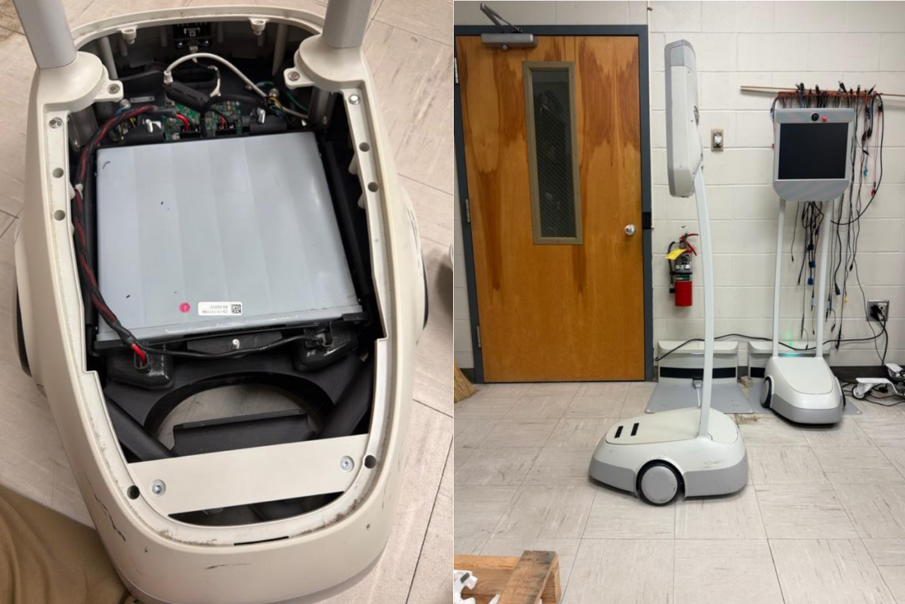

• Reviewed the TourBot project archive provided by Dr. Roppel, covering prior attempts from 2004 through 2012.
• Met with Dr. Roppel and confirmed project scope.
• Established the design baseline from the shortcomings of the department's previous telepresence robot:
no onboard obstacle sensing, no stored map, and no local control mode.
• Built the Work Breakdown Structure and assigned subsystem owners:
Mechanical & Design: Anna Claire Murphree
Power: Nik Kandula
Sensing & Localization: Jennifer Hamilton
Embedded Systems: Daniel Ramirez-Angeles and Ayat Trish
• Built the Gantt chart covering Fall 2026 and Spring 2027.
• Created Summary and Bio pages for website.
Week of September 7 - 11
• Confirmed the team has access to the Awabot Pro telepresence robot the department purchased
previously
• The Awabot Pro is the current name for the BeamPro, so this is the same product line as the unit described
in the project background, and it gives us a working reference platform to measure and drive
• Measured the Awabot Pro and the Broun Hall hallways and doors. Published specifications for the unit are
50 kg, 1.58 m tall, 38 cm wide, 63.5 cm long, roughly 8 hours of battery life, and a top speed near walking
pace. Our measured width and height agree with those figures, which gives us confidence in the rest of our
measurements
• Identified a sensing problem from the door measurements: The glass window in the Broun Hall doors
spans 90 cm to 182 cm off the ground. Both Awabot Pro cameras, at 155 cm and 112 cm, sit inside that
band, so a forward-looking camera at either height can see straight through a closed door.
• The lower camera is angled downward, so it should pick up the solid wood below the window. This gives us
a concrete requirement for our own design: at least one sensor must be aimed below 90 cm, and glass
detection cannot rely on a single forward-facing sensor.
• Began the power load budget for our unit. Preliminary per-subsystem estimates are below and will be refined
once the drivetrain and display are selected.
Week of September 14 - 18
Measured the Awabot Pro and the Broun Hall hallways and doors. Published specifications for the unit are
50 kg, 1.58 m tall, 38 cm wide, 63.5 cm long, roughly 8 hours of battery life, and a top speed near walking
pace. Our measured width and height agree with those figures, which gives us confidence in the rest of our
measurements.
Began the power load budget for our unit. Preliminary per-subsystem estimates are below and will be refined
once the drivetrain and display are selected.
• The attached image shows our measurements of the area.

Week of September 21 - 25
• Confirmed that the robot batteries do not work.
• Emailed Dr. Roppel and ordered new batteries for the beams.
• Attempted to test beam but were unable to power it on.